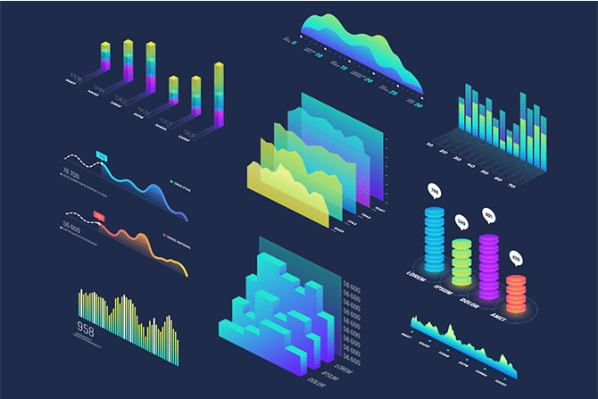

About me
I am a recent graduate of the Technical University of Košice, where I successfully completed my studies in Business Informatics. I have acquired strong technical and analytical skills that I am ready to apply in practice. I am communicative, friendly, and responsible, with a strong ability to quickly learn new things and solve problems effectively. In my free time i like to play PC games, listen to music, travel and read.
CRZP-Scraping is a Python-based web scraping tool designed to extract thesis information from the opac.crzp.sk website.

This is a simple interactive dashboard made by using Microsoft Excel that enables users to visualize and analyze bike sales data efficiently. It offers an interface with charts, graphs, and tables to help track key performance metrics related to bike sales.

PowerBI dashboard using Data Professionals Survey dataset, which contains responses from data professionals across various industries.
This project involves understanding Walmart's sales data, including data exploration, preprocessing and visualizing sales trends through graphs using Python.